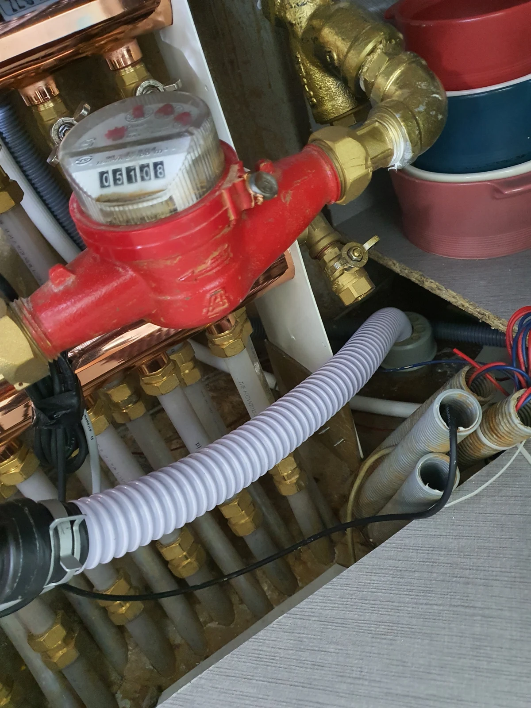
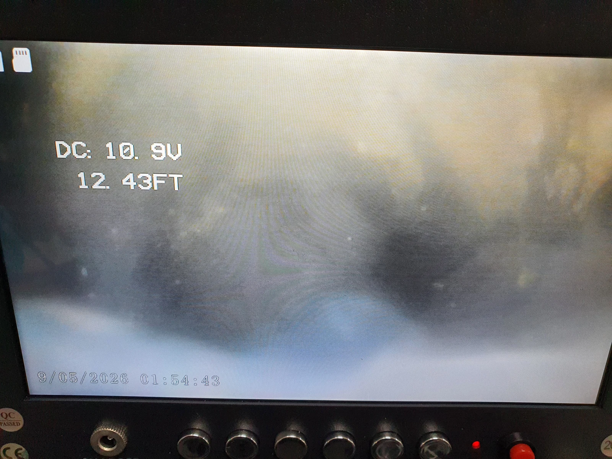

은평구 싱크대막힘 현장 도착과 진단
물이 잘 내려가지 않을 때 연결 호스만 확인하면 충분할까요? 은평구에서 싱크대 물이 잘 내려가지 않는다는 연락을 받고 늦은 밤 방문했습니다. 확인해보니 싱크대에 연결된 주름관부터 하부 배관까지 기름이 꽉 차 있었습니다. 싱크대막힘 원인이 한 부분에만 있지 않았기 때문에, 연결 호스의 상태와 그 아래로 이어지는 배수 경로를 함께 살펴 작업 순서를 정해야 했습니다.
이번 현장은 기름이 쌓인 주름관을 정리하는 작업과 하부 배관 내부를 청소하는 작업이 모두 필요했습니다. 같은 싱크대막힘 증상이라도 오염이 있는 위치에 따라 교체할 부분과 장비로 제거할 부분을 나누어 판단해야 합니다. 눈앞의 호스만 새것으로 바꾸어도 하부에 기름이 남아 있으면 배수 흐름을 충분히 확보하기 어렵기 때문입니다.
신라건축설비는 숙련된 기사들의 현장 경험을 바탕으로 필요한 작업을 단계별로 설명하는 방식을 중요하게 생각합니다. 은평구 싱크대막힘 사례에서는 주름관 교체와 하부 배관의 석션·샤프트 작업을 연결했습니다. 하수구막힘 상담에서도 장비 이름부터 나열하기보다는 실제 어느 구간이 막혀 있고 각 작업이 어떤 역할을 하는지 이해하기 쉽게 안내하는 것을 지향합니다.
1단계: 초입 배관 상태 확인과 필요한 처리
먼저 기름이 꽉 차 있던 주름관을 잘라내고 새 배관으로 교체했습니다. 싱크대에서 나온 물이 하부 배관으로 이동하는 연결 구간을 정리한 것입니다. 이 부분은 이번 싱크대막힘 현장에서 직접 확인된 오염 구간이었으며, 하부 배관 청소와 구분해 처리할 필요가 있었습니다. 싱크대에서 하부로 이어지는 연결 구간의 기름을 먼저 정리해 다음 작업을 진행할 수 있도록 했습니다.
주름관을 교체했다고 해서 작업을 바로 마칠 수는 없었습니다. 그 아래 배관에도 많은 기름이 차 있었기 때문입니다. 연결 부분을 새것으로 바꾸는 조치와 배관 내부에 붙어 있는 기름을 제거하는 조치는 목적이 다릅니다. 물이 지나가는 길을 따라 문제가 남아 있는 부분까지 처리해야 마지막 배수 시험에서도 작업 결과를 확인할 수 있습니다.
합리적인 시공은 무조건 작은 작업으로 끝내거나 모든 배관을 교체하는 것을 뜻하지 않습니다. 확인한 상태에 맞춰 교체가 필요한 부분과 청소할 부분을 구분하는 것이 중요합니다. 이번 싱크대막힘 작업도 주름관은 교체하고 하부 배관은 석션과 샤프트로 처리했습니다. 신라건축설비는 이러한 선택 이유를 고객님께 설명하며 필요한 공정과 진행 범위를 이해할 수 있도록 소통하겠습니다.

2단계: 하부배관 기름때 제거와 통수 확인
하부 배관에는 석션과 샤프트 작업을 반복했습니다. 석션은 오염물을 흡입해 빼내는 데 사용하고, 샤프트는 배관 안쪽에 붙어 있는 기름을 제거하는 데 활용했습니다. 이번 싱크대막힘 현장처럼 기름이 많이 차 있는 경우에는 두 방법의 역할을 나누어 적용하면서 남아 있는 오염물을 정리하는 과정이 필요했습니다.
한 번 장비를 넣었다는 사실보다 실제로 어떤 오염물을 처리했는지가 중요합니다. 이번에는 하부 배관의 많은 기름을 제거하기 위해 흡입과 샤프트 작업을 이어갔습니다. 붙어 있는 기름을 샤프트로 작업하고 석션으로 빼내는 과정을 반복해 배수 통로를 정리했습니다. 현장에 맞는 방법을 선택하고 그 범위 안에서 꼼꼼하게 작업하는 것이 기술력의 기본입니다.
은평구 싱크대막힘 작업에서는 늦은 밤이라는 상황에서도 주름관과 하부 배관의 역할을 구분해 처리했습니다. 신라건축설비는 경험 많은 기사들의 판단을 바탕으로 필요한 작업을 연결하고, 작업 과정에서 고객님이 궁금해하시는 부분을 쉽게 설명하는 시공을 지향합니다. 장비를 사용하는 과정과 주변을 깔끔하게 마무리하는 과정 모두 고객님이 다시 주방을 사용하는 데 필요한 부분입니다.

작업 결과와 재발 방지
기름 제거 작업 후에는 싱크볼에 물을 받아 많은 양을 한꺼번에 내려보내며 통수 상태를 확인했습니다. 소량의 물이 잠깐 빠지는 모습만 보는 대신 실제로 모아둔 물이 배수 경로를 따라 내려가는지 살펴본 것입니다. 이번 싱크대막힘 사례는 이 배수 시험에서 정상 통수를 확인한 뒤 마무리했습니다. 주름관 교체와 하부 청소의 결과를 실제 물 흐름으로 확인한 과정입니다.
싱크대가 막혔을 때 물을 계속 틀어두기보다는 우선 사용량을 줄이고 어느 지점에서 배수가 느려지는지 알려주세요. 조리 후 남은 기름은 배수구에 붓지 말고 따로 처리하고, 그릇의 기름기는 먼저 닦아낸 뒤 설거지하는 것이 좋습니다. 음식물 찌꺼기도 거름망에서 걸러 별도로 버려주세요. 이미 기름이 많이 쌓인 상태를 물만 오래 흘려 해결하려고 하기보다는 배관 상태에 맞는 점검을 받는 편이 좋습니다.
은평구에서 싱크대 뚫는 업체를 찾으실 때에는 교체와 청소가 각각 왜 필요한지, 마무리 단계에서 어떤 배수 확인을 하는지 설명을 들어보세요. 신라건축설비는 싱크대막힘의 원인과 위치에 맞춘 작업, 충분한 고객 소통, 합리적인 공정 선택을 중요하게 생각합니다. 이번 현장도 연결 배관 교체와 반복적인 기름 제거를 진행하고, 싱크볼 배수 시험을 거쳐 깔끔하게 마무리했습니다.
최종 조치: 기름이 찬 주름관을 새 배관으로 교체하고 하부 배관은 석션·샤프트 반복 작업으로 정리했습니다. 싱크대막힘 작업 후 싱크볼에 받은 물을 한꺼번에 배수하며 정상 통수를 확인했습니다.
현장 방문 전 확인하는 비용과 작업 범위
신라건축설비는 현장 증상과 배관 구조를 확인한 뒤 필요한 작업과 예상 비용을 안내합니다. 단순 관통으로 해결되는지, 배관내시경·석션·고압세척 또는 추가 장비가 필요한지는 현장 상태에 따라 달라집니다. 출장비와 야간 작업비, 추가 장비 비용이 발생할 수 있는 경우 작업 전에 먼저 설명하고 동의를 받은 범위에서 진행합니다.
업체를 선택할 때 확인할 사항
무조건적인 ‘0원’ 표현보다 실제 작업 범위, 추가 비용 조건, 사용 장비와 사후 대응 기준을 확인하는 것이 중요합니다. 해결되지 않았을 때의 비용 기준과 작업 후 동일 증상 발생 시 점검 범위를 사전에 문의해두면 불필요한 분쟁을 줄일 수 있습니다.
은평구 싱크대막힘 자주 묻는 질문
싱크대막힘은 왜 반복되나요?
주방 배수관 내부에 기름때·슬러지·음식물 찌꺼기가 누적되거나 배관 구배와 긴 횡주관 때문에 반복될 수 있습니다. 단순 관통 후 다시 막힌다면 배수관 내부 상태를 확인하는 것이 좋습니다. 이번 은평구 현장에서 확인한 원인은 다음과 같습니다. 주름관부터 하부 배관까지 기름이 차 있었습니다.
싱크대 물이 안 내려가거나 역류하면 싱크대뚫는업체를 불러야 하나요?
물이 천천히 빠지거나 싱크대역류가 반복되면 배수구 입구보다 안쪽 주방 배관에 막힘이 있을 수 있습니다. 현장에서는 배수 상태와 막힌 구간을 확인한 뒤 작업 방법을 정합니다.
싱크대 기름때 막힘은 약품으로 해결되나요?
가벼운 오염은 일시적으로 나아질 수 있지만 굳은 기름 슬러지와 배관 내부 스케일은 약품만으로 충분히 제거되지 않는 경우가 있습니다. 반복 막힘은 장비를 이용한 배관 청소가 필요할 수 있습니다.
싱크대뚫는업체는 어떤 장비로 작업하나요?
막힘 위치와 배관 상태에 따라 석션, 샤프트, 배관내시경, 배관 스케일링 장비 등을 사용합니다. 필요한 장비는 현장 진단 후 결정합니다.
싱크대막힘 비용은 어떻게 정해지나요?
막힘 구간의 길이와 오염 정도, 석션·샤프트·내시경 등 장비 투입 범위에 따라 달라질 수 있습니다. 작업 전 예상 범위와 추가 비용 조건을 먼저 안내합니다.
싱크대 악취도 배수관 막힘과 관련 있나요?
기름 슬러지와 음식물 오염이 배수관 내부에 쌓이면 배수 불량과 함께 악취가 나타날 수 있습니다. 다만 트랩이나 연결부 문제도 있어 현장 상태를 함께 확인해야 합니다.
싱크대막힘 서울·경기 출동지역
신라건축설비는 은평구 현장을 포함해 서울 25개 구와 경기도 31개 시·군의 배관 문제를 상담합니다. 현장 거리와 기사 배정 상황에 따라 출동 가능 여부를 먼저 안내드립니다.
서울 전 지역
강남구 · 강동구 · 강북구 · 강서구 · 관악구 · 광진구 · 구로구 · 금천구 · 노원구 · 도봉구 · 동대문구 · 동작구 · 마포구 · 서대문구 · 서초구 · 성동구 · 성북구 · 송파구 · 양천구 · 영등포구 · 용산구 · 은평구 · 종로구 · 중구 · 중랑구
경기도 주요 출동지역
수원시 · 용인시 · 고양시 · 화성시 · 성남시 · 부천시 · 남양주시 · 안산시 · 평택시 · 안양시 · 시흥시 · 파주시 · 김포시 · 의정부시 · 광주시 · 하남시 · 광명시 · 군포시 · 양주시 · 오산시 · 이천시 · 안성시 · 구리시 · 의왕시 · 포천시 · 양평군 · 여주시 · 동두천시 · 과천시 · 가평군 · 연천군